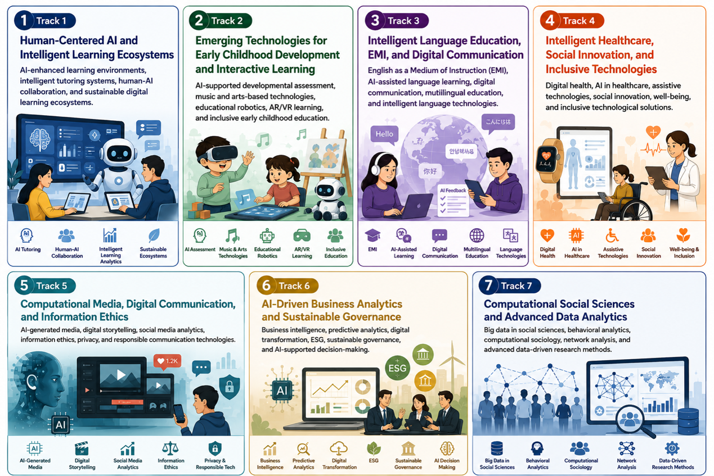
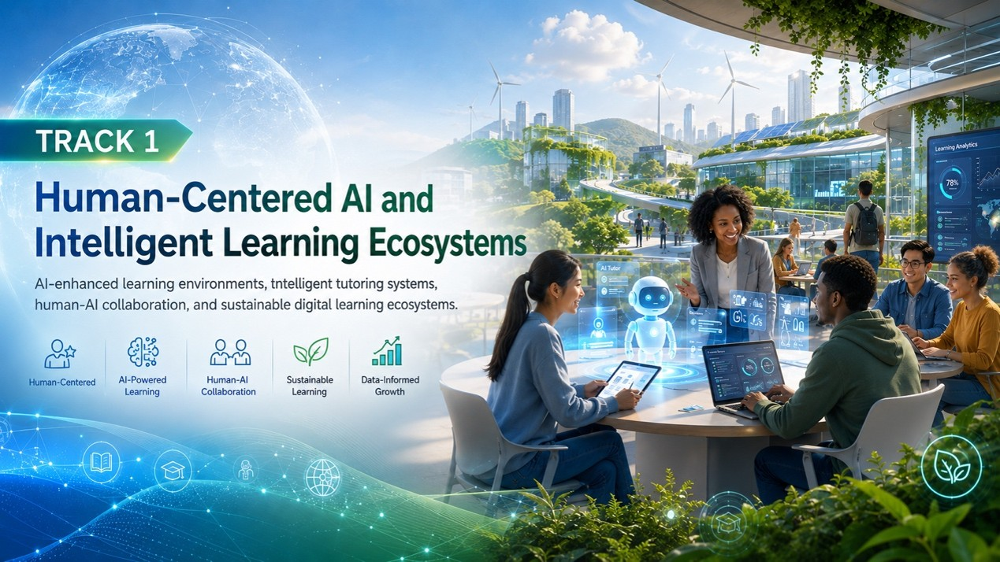
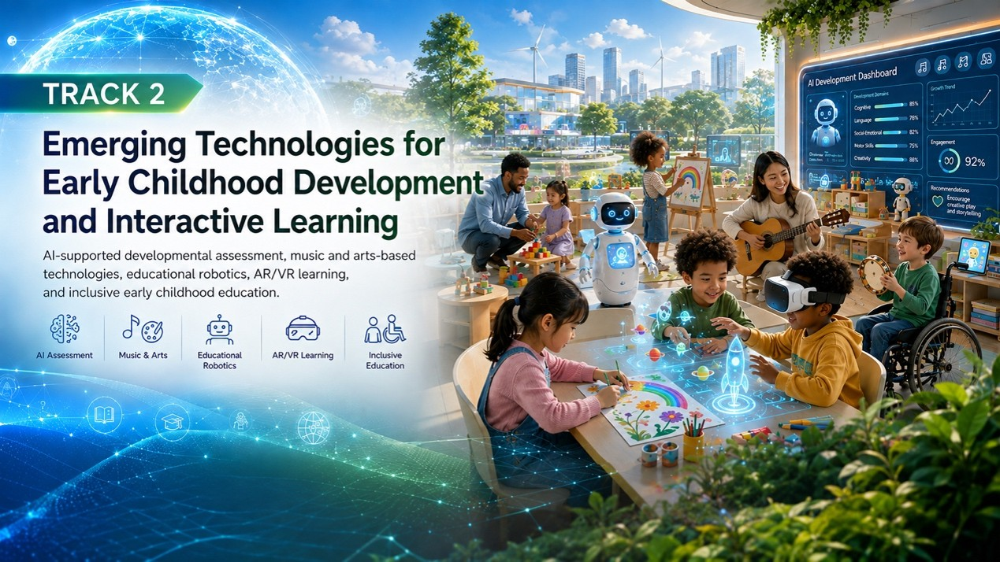
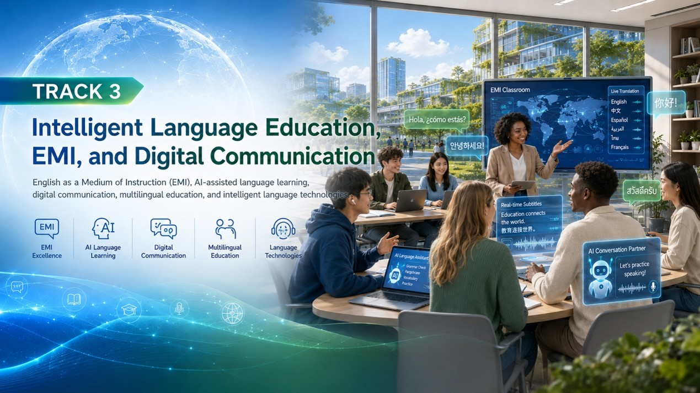
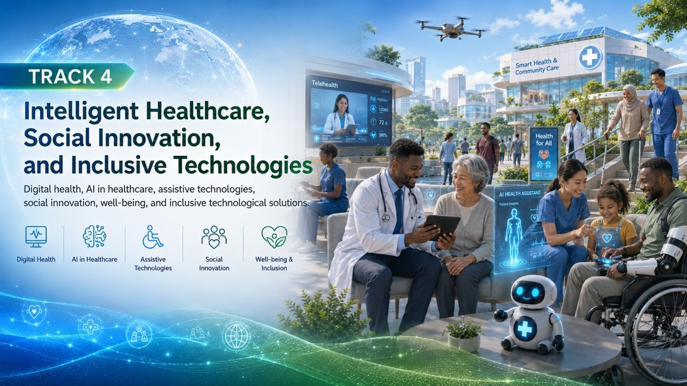
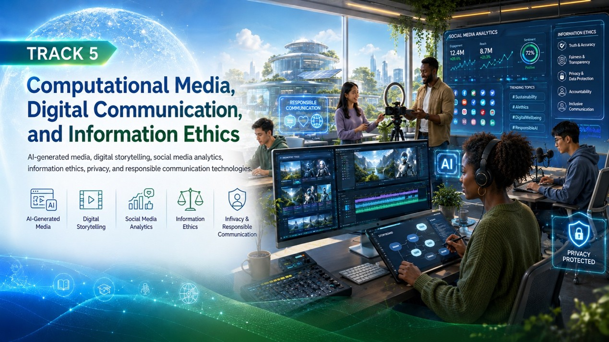
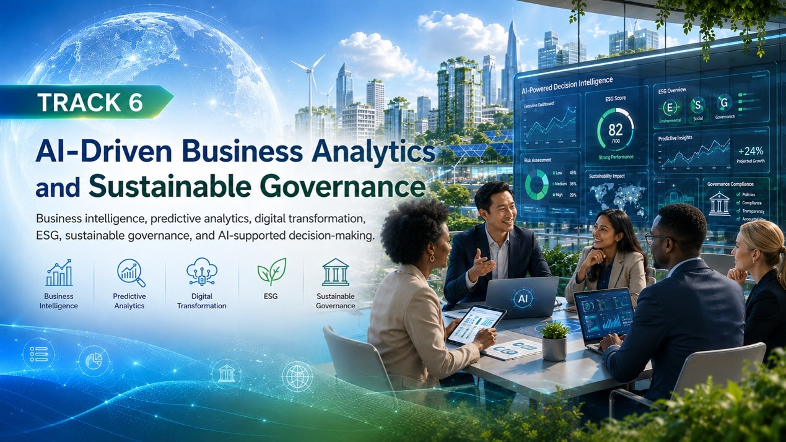
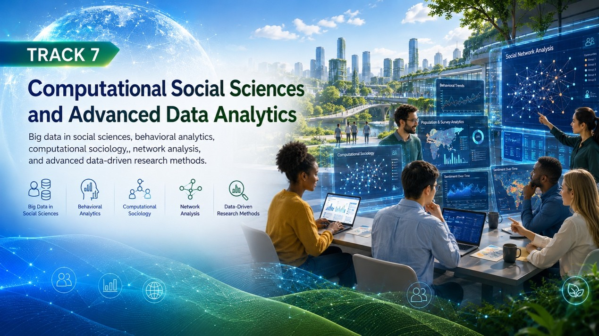
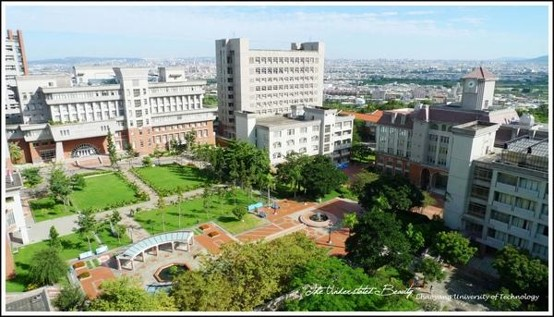
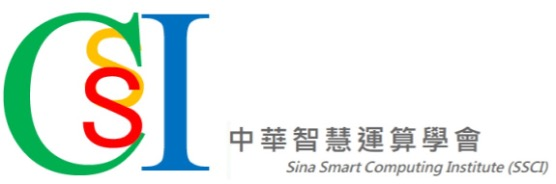

SSIM 2026 Photo Gallery
📸Photo Gallery
Capturing memorable moments from SSIM 2026 and celebrating global collaboration in human-centered AI, intelligent learning ecosystems, social sciences, education, healthcare, business, and digital innovation.
🏛Opening Ceremony & International Collaboration
- Welcome Address
- Conference Opening Ceremony
- Distinguished Guests and Delegates
- Group Photos
- International Academic Partnerships
🌟Keynote & Invited Speakers
- Keynote Speeches
- Panel Discussions
- Q&A Sessions
📚Conference Tracks Gallery

Track 1. Human-Centered AI and Intelligent Learning Ecosystems

AI-enhanced learning environments, intelligent tutoring systems, human-AI collaboration, and sustainable digital learning ecosystems.
Track 2. Emerging Technologies for Early Childhood Development and Interactive Learning

AI-supported developmental assessment, music and arts-based technologies, educational robotics, AR/VR learning, and inclusive early childhood education.
Track 3. Intelligent Language Education, EMI, and Digital Communication

AI-enhanced learning environments, intelligent tutoring systems, human-AI collaboration, and sustainable digital learning ecosystems.
Track 4. Intelligent Healthcare, Social Innovation, and Inclusive Technologies

Digital health, AI in healthcare, assistive technologies, social innovation, well-being, and inclusive technological solutions.
Track 5. Computational Media, Digital Communication, and Information Ethics

AI-generated media, digital storytelling, social media analytics, information ethics, privacy, and responsible communication technologies.
Track 6. AI-Driven Business Analytics and Sustainable Governance

Business intelligence, predictive analytics, digital transformation, ESG, sustainable governance, and AI-supported decision-making.
Track 7. Computational Social Sciences and Advanced Data Analytics

Big data in social sciences, behavioral analytics, computational sociology, network analysis, and advanced data-driven research methods.
🏆Certificates & Recognition
- Keynote Speeches
- Panel Discussions
- Q&A Sessions
🌟Keynote & Invited Speakers
- Keynote Speeches
- Panel Discussions
- Q&A Sessions
🤝Networking & Cultural Experience
- Welcome Reception
- Conference Banquet
- Academic Networking Sessions
- Cultural Exchange Activities
🏞 Discover Taichung & Chaoyang

Featuring memorable moments from campus tours and cultural visits, including:
- Chaoyang University of Technology
- Wufeng Lin Family Mansion and Garden
- Guangfu New Village
- National Taichung Theater
- Fengjia Night Market
📖 SSIM Through the Years
Since its inception in 2021, SSIM has evolved from a pioneering interdisciplinary conference into an international platform connecting researchers, educators, practitioners, and innovators across social sciences, artificial intelligence, education, healthcare, business, and digital technologies.
- SSIM 2021– The Beginning of SSIM | See more photos
The 1st International Conference on Social Sciences and Intelligenct Management (SSIM 2021) marked the beginning of an international interdisciplinary platform that bridges social sciences and emerging intelligent technologies. Organized during the COVID-19 pandemic, SSIM 2021 successfully connected researchers and scholars from different regions through virtual and hybrid participation, establishing a strong foundation for the conference's future development. Due to pandemic-related restrictions and the predominance of online activities, fewer on-site photographs were captured compared with later editions of the conference.
- SSIM 2022– Bringing Intelligent Management to Social Sciences | See more photos
The 2nd IEEE International Conference on Social Sciences and Intelligence Management (IEEE SSIM 2022) adopted the theme “Bringing Intelligent Management to Social Sciences.” The conference expanded its international reach and promoted interdisciplinary dialogue among researchers in social sciences, education, technology, and intelligent management.
- SSIM 2023– Innovative Learning Technology in Social Sciences and Intelligence Management | See more photos
The 2nd IEEE International Conference on Social Sciences and Intelligence Management (IEEE SSIM 2022) adopted the theme “Bringing Intelligent Management to Social Sciences.” The conference expanded its international reach and promoted interdisciplinary dialogue among researchers in social sciences, education, technology, and intelligent management.
- SSIM 2024– New Trends in Social Sciences and Intelligence Management | See more photos
The 4th International Conference on Social Sciences and Intelligence Management (SSIM 2024) explored emerging trends shaping the future of social sciences and intelligence management. Bringing together scholars and professionals from around the world, the conference emphasized interdisciplinary research, artificial intelligence, big data applications, educational technologies, and social innovation.
- SSIM 2025 – Integrating Artificial Intelligence in Social Sciences and Intelligence Management | See more photos
The 4th International Conference on Social Sciences and Intelligence Management (SSIM 2024) explored emerging trends shaping the future of social sciences and intelligence management. Bringing together scholars and professionals from around the world, the conference emphasized interdisciplinary research, artificial intelligence, big data applications, educational technologies, and social innovation.

